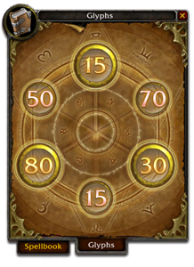

Inscription Profession Leveling Guide
Inscription Overview:
Inscription is a new crafting profession that was introduced in patch 3.0.2. It allows players to alter spells in various ways, including lowering cooldowns, increasing damage, or tweaking spell mechanics (such as stun, knockback, and over time effects). It is a primary profession so it counts as one of the two primary professions a player is allowed to train in. The best complimentary gathering profession to get alongside Inscription is Herbalism since Herbs
Requirements:
To be able to train in Inscription you must meet the following requirements:- You must be at least level 5
- You must have The Burning Crusade expansion installed to learn 1-375
- You must have Wrath of the Lich Kich expansion installed to learn 375-450
What Can You Do With Inscription:
Inscription allows you to create many items that make it a very unique profession.
- Scrolls:
Scrolls give players a temporarily bonus to their base stats for a duration of time. These will be highly indemand by gamers who do instances a lot.
- Enchanted Parachments:
Used by enchanters to write down their enchants and sell them. This will be one of the most in demand items because they can now easily sell their enchants over the auction house.
- Glyphs:
Glyphs are Items that enhance characters spells and abilities. Every player now has a Glyph page where they can alter their spells.
- Tarot Cards:
You can make Cards from the Rogues deck. Further more, you can purchase individual cards or make the ones you don't have to form a complete deck which will sell for a ton on the Auction House.
- Ink:
This is the lifeblood of your inscriptions. Inks are made by using the sub-skill of Milling. Milling herbs yeilds special reagants that can be used to make various inks.
Apprentice Inscription
- Go to an Inscription Trainer and train in Apprentice Inscription
- Go to an Inscription Supplies Vendor and buy a Virtuoso Inking Set
- Gather or buy enough Silverleaf, Peacebloom, Earthroot, or Bloodthistle to mill 79 Alabaster Pigment
- Purchase 38 Light Parchment
- Create 35 Ivory Ink
- Create 17 Scrolls of Intellect, Spirit, or Stamina
- Go to an Inscription Trainer and learn the recipes for Moonglow Ink and Armor Vellum
- Create 22 Moonglow Ink
- Create 21 Armor Vellum
Journeyman Inscription
- Go to an Inscription Trainer and train in Journeyman Inscription
- Gather or buy enough Mageroyal, Briarthorn, Swiftthistle, Bruiseweed, and Stranglekelp to mill 36 Dusky Pigment and 5 Verdant Pigment
Purchase 20 Light Parchment - Go to an Inscription Trainer and learn the recipes for Midnight Ink and Minor Inscription Research
- Create 18 Midnight Ink
- Go to an Inscription Trainer and learn the recipes for Glyph of Backstab, Frost Nova, Hunter's Mark, Power Word: Shield, Rejuvenation, and/or Spiritual Attunement
- Create 5 Glyph of Backstab, Frost Nova, Hunter's Mark, Power Word: Shield, Rejuvenation, or Spiritual Attunement
- Go to an Inscription Trainer and learn the recipe for Hunter's Ink, Glyph of Corruption, Flame Shock, Rapid Charge, and/or Wrath
- Create 5 Hunter's Ink
- Create 3 Glyph of Corruption, Flame Shock, Rapid Charge, and/or Wrath
- Go to an Inscription Trainer and learn the recipe for Glyph of Hammer of Justice, Ice Armor, Maul, and/or Serpent Sting
- Create 10 Glyph of Hammer of Justice, Ice Armor, Maul, and/or Serpent Sting
- Mill Grave Moss, Kingsblood, Liferoot, or Wild Steelbloom until you have 116 Golden Pigment and 16 Burnt Pigment
- Go to an Inscription Trainer and learn the recipe for Lions Ink
- Create 59 Lions Ink
- Purchase 40 Common Parchment
- Go to an Inscription Trainer and learn the recipe for Glyph of Arcane Explosion, Arcane Shot, and/or Entangling Roots
- Create 1 Glyph of Arcane Explosion, Arcane Shot, and/or Entangling Roots
- Go to an Inscription Trainer and learn the recipe for Glyph of Eviscerate, Fade, and/or Holy Light
- Create 5 Glyph of Eviscerate, Fade, and/or Holy Light
- Go to an Inscription Trainer and learn the recipe for Glyph of Fire Nova Totem, Health Funnel, and/or Rending
- Create 5 Glyph of Fire Nova Totem, Health Funnel, and/or Rending
- Go to an Inscription Trainer and learn the recipe for Glyph of Arcane Missiles, Aspect of the Monkey, Healing Touch
- Create 5 Arcane Missiles, Aspect of the Monkey, Healing Touch
- Go to an Inscription Trainer and learn the recipe for Glyph of Expose Armor, Flash Heal, and/or Judgement
- Create 5 Glyph of Expose Armor, Flash Heal, and/or Judgement
Expert Inscription
- Go to an Inscription Trainer and train in Expert Inscription and learn the recipe for Dawnstar Ink
- Create 16 Dawnstar Ink
- Go to an Inscription Trainer and learn the recipe for Glyph of Blink, Immolation Trap, and/or Moonfire
- Create 5 Glyph of Blink, Immolation Trap, and/or Moonfire
- Go to an Inscription Trainer and learn the recipe for Glyph of Garrote, Inner Fire, and/or Lay on Hands [Divinity]
- Create 5 Glyph of Garrote, Inner Fire, and/or Lay on Hands [Divinity]
- Go to an Inscription Trainer and learn the recipe for Glyph of Imp, Lightning Bolt, and/or Sunder Armor
- Create 2 Glyph of Imp, Lightning Bolt, and/or Sunder Armor
- Go to an Inscription Trainer and learn the recipe for Strange Tarot
- Create 8 Strange Tarot
- Mill Fadeleaf, Goldthorn, Khadgar's Whisker, and/or Wintersbite until you have 110 Emerald Pigment and 16 Indigo Pigment. Purchase 54 Common Parchment.
- Go to an Inscription Trainer and learn the recipe for Jadefire Ink
- Create 55 Jadefire Ink
- Go to an Inscription Trainer and learn the recipe for Glyph of Insect Swarm and/or Multi-Shot
- Create 1 Glyph of Insect Swarm or Multi-Shot
- Go to an Inscription Trainer and learn the recipe for Glyph of Evocation and/or Righteous Defense
- Create 5 Glyph of Evocation and/or Righteous Defense
- Go to an Inscription Trainer and learn the recipe for Glyph of Gouge and/or Renew
- Create 5 Glyph of Gouge and/or Renew
- Go to an Inscription Trainer and learn the recipe for Glyph of Lava Lash and/or Shadow Bolt
- Create 5 Glyph of Lava Lash and/or Shadow Bolt
- Go to an Inscription Trainer and learn the recipe for Glyph of Overpower
- Create 5 Glyph of Overpower
- Go to an Inscription Trainer and learn the recipe for Royal Ink
- Create 16 Royal Ink
- Go to an Inscription Trainer and learn the recipe for Scroll of Agility III
- Create 8 Scroll of Agility III
- Go to an Inscription Trainer and learn the recipe for Glyph of Cleansing and/or Shadow Word: Pain
- Create 2 Glyph of Cleansing and/or Shadow Word: Pain
- Go to an Inscription Trainer and learn the recipe for Glyph of Frost Shock and/or Sap
- Create 5 Glyph of Frost Shock and/or Sap
- Go to an Inscription Trainer and learn the recipe for Glyph of Revenge and/or Voidwalker
- Create 2 Glyph of Revenge and/or Voidwalker
- Go to an Inscription Trainer and learn the recipe for Arcane Tarot
- Create 8 Arcane Tarot
Artisan Inscription
- Go to an Inscription Trainer and train in Artisan Inscription and learn the recipe for Celestial Ink
- Mill Arthas' Tears, Blindweed, Firebloom, Ghost Mushroom, Gromsblood, Purplte Lotus, and/or Sungrass until you have 94 Violet Pigment and 14 Ruby Pigment
Purchase 50 Heavy Parchment
Purchase 6 Common Parchment. - Create 47 Celestial Ink
- Go to an Inscription Trainer and learn the recipe for Armor Vellum II
- Create 6 Armor Vellum II
- Go to an Inscription Trainer and learn the recipe for Glyph of Sinister Strike and/or Smite
- Create 5 Glyph of Sinister Strike and/or Smite
- Go to an Inscription Trainer and learn the recipe for Glyph of Healing Stream Totem and/or Searing Pain
- Create 5 Glyph of Healing Stream Totem and/or Searing Pain
- Go to an Inscription Trainer and learn the recipe for Glyph of Barbaric Insults and/or Starfire
- Create 5 Glyph of Barbaric Insults and/or Starfire
- Go to an Inscription Trainer and learn the recipe for Fiery Ink
- Create 14 Fiery Ink
- Go to an Inscription Trainer and learn the recipe for Scroll of Agility IV
- Create 2 Scroll of Agility IV
- Go to an Inscription Trainer and learn the recipe for Glyph of Dispel Magic
- Create 5 Glyph of Dispel Magic
- Go to an Inscription Trainer and learn the recipe for Glyph of Lesser Healing Wave and/or Slice and Dice
- Create 1 Glyph of Lesser Healing Wave and/or Slice and Dice
- Go to an Inscription Trainer and learn the recipe for Weapon Vellum II
- Create 14 Weapon Vellum II
- Mill Dreamfoil, Golden Sansam, Icecap, Mountain Silversage, and/or Plaguebloom until you have 56 Silvery Pigment and 8 Sapphire Pigment
- Purchase 40 Heavy Parchment
- Go to an Inscription Trainer and learn the recipe for Shimmering Ink
- Create 28 Shimmering Ink
- Go to an Inscription Trainer and learn the recipe for Scroll of Stamina V
- Create 1 Scroll of Stamina V
- Go to an Inscription Trainer and learn the recipe for Scroll of Spirit
- Create 5 Scroll of Spirit
- Go to an Inscription Trainer and learn the recipe for Glyph of Freezing Trap and/or Shred
- Create 5 Glyph of Freezing Trap and/or Shred
- Go to an Inscription Trainer and learn the recipe for Glyph of Bone Shield and/or Exorcism
- Go to an Inscription Trainer and learn the recipe for Glyph of Fear Ward and/or Frost Strike
- Create 5 Glyph of Fear Ward and/or Frost Strike
- Go to an Inscription Trainer and learn the recipe for Ink of the Sky
- Create 8 Ink of the Sky
- Go to an Inscription Trainer and learn the recipe for Glyph of Shadowburn and/or Water Mastery
- Create 2 Glypj of Shadowburn and/or Water Mastery
- Go to an Inscription Trainer and learn the recipe for Glyph of Death Grip Execution, and/or Sprint
- Create 5 Glyph of Death Grip, Execution and/or Sprint
Master Inscription
- Go to an Inscription Trainer and train in Artisan Inscription and learn the recipe for Ethereal Ink
- Mill Ancient Lichen, Dreaming Glory, Felweed, Mana Thistle, Netherbloom, Nightmare Vine, Ragveil, and or Terocone until you have 124 Nether Pigment and 20 Ebon Pigment
Purchase 45 Resilient Parchment
Purchase 6 Heavy Parchment - Create 62 Ethereal Ink
- Go to an Inscription Trainer and learn the recipe for Glyph of Earthliving Weapon, Flash of Light, and/or Plague Strike
- Create 1 Glyph of Earthliving Weapon, Flash of Light, and/or Plague Strike
- Go to an Inscription Trainer and learn the recipe for Glyph of Feint
- Create 5 Glyph of Feint
- Go to an Inscription Trainer and learn the recipe for Glyph of Rake and/or Rune Tap
- Create 5 Rake and/or Rune Tap
- Go to an Inscription Trainer and learn the recipe for Glyph of Holy Nova and/or Rapid Fire
- Create 5 Glyph of Holy Nova and/or Rapid Fire
- Go to an Inscription Trainer and learn the recipe for Glyph of Blood Strike and/or Sweeping Strikes
- Go to an Inscription Trainer and learn the recipe for Darkflame Ink
- Create 20 Darkflame Ink
- Go to an Inscription Trainer and learn the recipe for Glyph of Mage Armor and/or Succubus
- Create 3 Glyph of Mage Armor and/or Succubus
- Go to an Inscription Trainer and learn the recipe for Glyph of Scourge Strike and/or Windfury Weapon
- Create 5 Glyph of Scourge Strike and/or Windfury Weapon
- Go to an Inscription Trainer and learn the recipe for Glyph of Arcane Power and/or Seal of Command
- Create 5 Glyph of Arcane Power and/or Seal of Command
- Go to an Inscription Trainer and learn the recipe for Glyph of Ambush and/or Death Strike
- Create 5 Ambush and/or Death Strike
- Go to an Inscription Trainer and learn the recipe for Glyph of Whirlwind
- Create 5 Glyph of Whirlwind
Grand Master Inscription
- Go to Professor Pallin in Dalaran, train in Grand Master Inscription and learn the recipe for Ink of the Sea
- Mill Adder's Tongue, Constrictor Grass, Deadnettle, Goldclover, Icethorn, Lichbloom, Talandra's Rose, Tiger Lily until you have 188 Azure Pigment and 28 Icy Pigment
Purchase 450 Resilient Parchment - Create 94 Ink of the Sea
- Go to an Inscription Trainer and learn the recipe for Scroll of Spirit VII
- Create 5 Scroll of Spirit VII
- Go to an Inscription Trainer and learn the recipe for Scroll of Intellect VII
- Create 5 Scroll of Intellect VII
- Go to an Inscription Trainer and learn the recipe for Scroll of Strength VII
- Create 5 Scroll of Strength VII
- Go to an Inscription Trainer and learn the recipe for Scroll of Agility VII
- Create 5 Scroll of Agility VII
- Go to an Inscription Trainer and learn the recipe for Snowfall Ink
- Create 14 Snowfall Ink
- Go to an Inscription Trainer and learn the recipe for Glyph of Ice Lance, Improved Aspect of the Hawk, Scourge Imprisonment, Stormstrike, Strangulate, and/or Turn Evil
- Create 11 Glyph of Ice Lance, Improved Aspect of the Hawk, Scourge Imprisonment, Stormstrike, Strangulate, and/or Turn Evil
- Go to an Inscription Trainer and learn the recipe for Northrend Inscription Research. You will need to learn a major glyph from this. If you don't the first time, you will have to wait 20 hours to try again.
- Create 25 of the Glyph you discovered
- Go to an Inscription Trainer and learn the recipe for Scroll of Stamina VIII
- Create 5 Scroll of Stamina VIII
- Go to an Inscription Trainer and learn the recipe for Scroll of Spirit VIII
- Create 5 Scroll of Spirit VIII
- Go to an Inscription Trainer and learn the recipe for Scroll of Intellect VIII
- Create 5 Scroll of Intelect VIII
- Go to an Inscription Trainer and learn the recipe for Scroll of Strength VIII
- Create 5 Scroll of Strength VIII
- Go to an Inscription Trainer and learn the recipe for Scroll of Agility VIII
- Create 15 Scroll of Agility VIII
- Mill Adder's Tongue, Icethorn, and Lichbloom until you have 220 Azure Pigment, 335 Icy Pigment and 90 Crystalized Life
Purchase 450 Resilient Parchment - Create 20 Scroll of Agility VIII
- Create 30 Darkmoon Card of the North (keep making until you are 450)
- Congratulations you are now level 450!